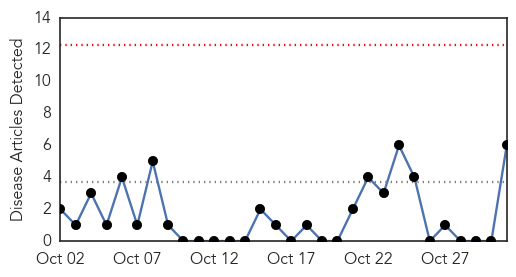
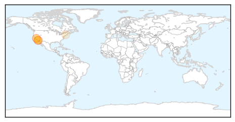
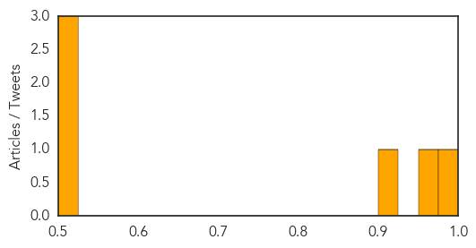

MERS
30-Day Web Trend
0 alerts, 0 warnings

30-Day Twitter Trend
3 alerts, 0 warnings

Article Locations
Article Confidences

Top Articles:
Top Tweets:
-
No tweets found for Oct 31, 2014
West Nile Virus
30-Day Web Trend
0 alerts, 0 warnings

30-Day Twitter Trend
3 alerts, 0 warnings

Article Locations
Article Confidences
Top Articles:
- 0.992
- Enterovirus Spike Sparks Concern
- 0.955
- Health Officials Suspect San Carlos Man Died Of West Nile Virus
- 0.921
- 71-year-old man is second person to die of West Nile virus
- 0.520
- Battle shifts over Lyme disease
- 0.505
- Another West Nile death? Investigation underway
- 0.505
- Another West Nile death? Investigation underway
Top Tweets:
-
No tweets found for Oct 31, 2014